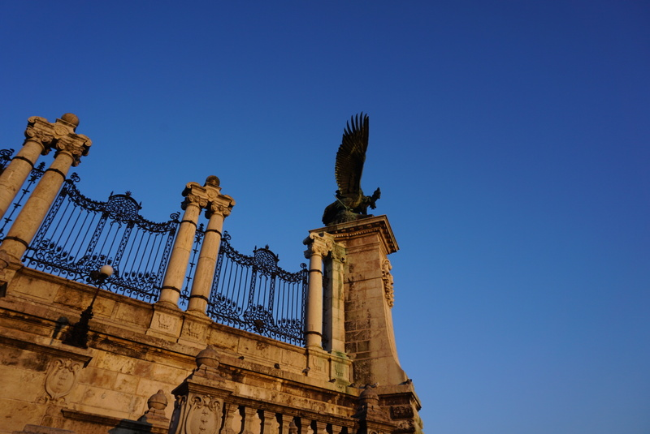

Photography
USC Campus
Photos took by Qianhui Ni in Aug 2019
Location: USC University Park Campus
Santa Catalina Island
Photos took by Qianhui Ni in Jun 2021
Location: Santa Catalina Island
Budapest
Photos took by Qianhui Ni in Jan 2020
Location: Budapest, Hungary

- 
Random Life Photos

Writing
Check out my article on ALI Life & Times: